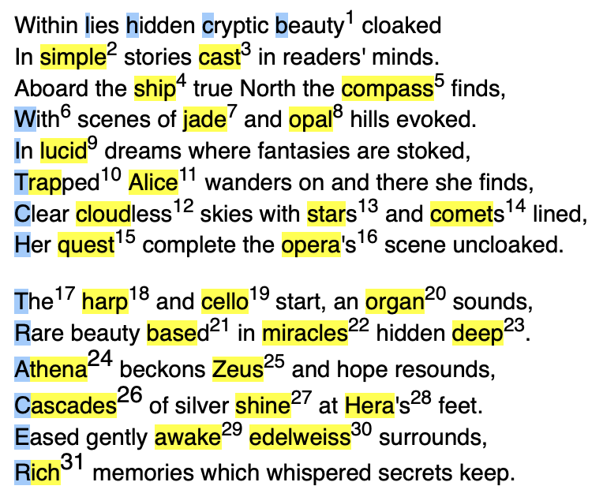

Alice's Adventures in Collider-land
Within lies hidden cryptic beauty cloaked,
In simple stories cast in readers' minds.
Aboard the ship true North the compass finds,
With scenes of jade and opal hills evoked.
In lucid dreams where fantasies are stoked,
Trapped Alice wanders on and there she finds,
Clear cloudless skies with stars and comets lined,
Her quest complete the opera's scene uncloaked.
The harp and cello start, an organ sounds,
Rare beauty based in miracles hidden deep.
Athena beckons Zeus and hope resounds,
Cascades of silver shine at Hera's feet.
Eased gently awake edelweiss surrounds,
Rich memories which whispered secrets keep.
Ella Wood 2003
Commentary
Within this Petrarchan sonnet, inspired by Lewis Carroll's "Alice's Adventures in Wonderland", the reader is taken on a journey through past, present, and future particle physics experiments/detectors. As Alice tumbles down one of the access shafts to the Large Hadron Collider at CERN, a swirling world of chaos, beauty and nonsense opens us around her hiding the experiments aiming to answer some of the most fundamental questions about our Universe. But here they have been transformed into dizzying kaleidoscopic images of scenes their names evoke. Overall, 31 of these experiments/detectors lie hidden within the sonnet as given in the list below which includes a relevant paper/technical report and webpage for each where possible.

References
[1] LHCb - S. Amato et al. LHCb. Technical proposal. Feb. 1998.
LHCb | CERN (home.cern)
[2] SIMPLE - T. Girard, F. Giuliani, et al. SIMPLE dark matter search results. Physics Letters B, 621(3):233-238, 2005.
SIMPLE (dark matter experiment) explained
[3] CAST - V. Anastassopoulos et al. New CAST limit on the axion-photon interaction. Nature Physics, 13(6):584-590, May 2017.
CAST | CERN (home.cern)
[4] SHIP - SHIP Collaboration et al. A facility to search for hidden particles (SHIP) at the CERN SPS, 2015.
SHIP Collaboration (cern.ch)
[5] COMPASS - P. Abbon et al. The COMPASS experiment at CERN. Nuclear Instruments and Methods in Physics Research Section A: Accelerators, Spectrometers, Detectors and Associated Equipment, 577(3):455-518, 2007.
COMPASS Experiment (cern.ch)
[6] WITCH - V. Kozlov et al. The WITCH experiment: Towards weak interactions studies. Status and prospects. Hyperfine Interactions, 172:15-22, Sept. 2006.
WITCH hunt nearing end at CERN | CERN (home.cern)
[7] JADE - S. Bethke and A. Wagner. The JADE Experiment at the PETRA e+ e- collider history, achievements and revival. Eur. Phys. J. H, 47:16, 2022.
JADE experiment in Max-Planck Institut for Physics (mpg.de)
[8] OPAL - K. Ahmet et al. The OPAL detector at LEP. Nuclear Instruments and Methods in Physics Research Section A: Accelerators, Spectrometers, Detectors and Associated Equipment, 305(2):275-319, 1991.
OPAL | CERN (home.cern)
[9] LUCID - F. Lasagni Manghi. LUCID: The ATLAS Luminosity Detector. Technical Report, CERN, Geneva, 2019.
The LUCID detector for LHC run 3 (cern.ch)
[10] TRAP - G. Gabrielse et al. First capture of antiprotons in a penning trap: A kiloelectronvolt source. Phys. Rev. Lett., 57:2504-2507, Nov. 1986.
Letter of intent to the SPSLC of CERN
[11] ALICE - B. Alessandro et al. ALICE: Physics performance report, volume II. Journal of Physics G: Nuclear and Particle Physics, 32(10):1295, Sep. 2006.
ALICE | ALICE Collaboration (cern.ch)
[12] CLOUD - J. Kirkby et al. Role of sulphuric acid, ammonia and galactic cosmic rays in atmospheric aerosol nucleation. Nature, 476:429-33, Aug. 2011.
CLOUD | CERN (home.cern)
[13] STAR - K. Ackermann et al. STAR detector overview. Nuclear Instruments and Methods in Physics Research Section A: Accelerators, Spectrometers, Detectors and Associated Equipment, 499(2):624-632, 2003.
START
[14] COMET - R. Abramishvili et al. COMET phase-I technical design report. Progress of Theoretical and Experimental Physics, 2020(3), Mar. 2020.
COMET Experiment at J-PARC (kek.jp)
[15] QUEST - M. T. Noble et al. Acoustic emission in bulk normal and superfluid 3He. Applied Physics Letters, 122(16):163502, April 2023.
QUEST
[16] OPERA - T. Adam et al. Measurement of the neutrino velocity with the OPERA detector in the CNGS beam. Journal of High Energy Physics, 2012(10), Oct. 2012.
OPERA experiment reports anomaly in flight time of neutrinos from CERN to Gran Sasso | CERN (home.cern)
[17] TRACER - P. J. Boyle. The elemental composition of high-energy cosmic rays: Measurements with TRACER. Modern Physics Letters A, 23(25):2031-2045, Aug.2008.
[18] HARP - M. Catanesi. HARP: a hadron production experiment for the neutrino factory and for the atmospheric neutrino flux. Nuclear Physics B - Proceedings Supplements, 100(1):130-132, 2001
HARP-UK (shef.ac.uk)
[19] CELLO - M.-J. Schachter et al. CELLO: a new detector at PETRA. Phys. Scripta, 23:610-622, 1981.
[20] ORGAN - B. T. McAllister et al. The ORGAN experiment: An axion haloscope above 15 GHz. Physics of the Dark Universe, 18:67-72, Dec. 2017.
This Australian experiment is on the hunt for an elusive particle that could help unlock the mystery of dark matter (theconversation.com)
[21] BASE - C. Smorra et al. BASE - the baryon antibaryon symmetry experiment. The European Physical Journal Special Topics, 224(16):3055-3108, Nov. 2015.
BASE | CERN (home.cern)
[22] MIRACLE - S. Sels et al. First steps in the development of the multi-ion reflection apparatus for collinear laser spectroscopy. Nuclear Instruments and Methods in Physics Research Section B: Beam Interactions with Materials and Atoms, 463:310-314, 2020.
MIRACLS (cern.ch)
[23] DEAP - P.-A. Amaudruz et al. First results from the DEAP-3600 dark matter search with argon at SNOLAB. Phys. Rev. Lett., 121:071801, Aug. 2018.
DEAP-3600 - Dark matter Experiment using Argon Pulse-shape discrimination (deap3600.ca)
[24] ATHENA - J. Adam et al. ATHENA detector proposal =97 a totally hermetic electron nucleus apparatus proposed for ip6 at the electron-ion collider. Journal of Instrumentation, 17(10): P10019, Oct. 2022.
ATHENA - A Totally Hermetic Electron-Nucleus Apparatus (temple.edu)
[25] ZEUS - M. Derrick et al. Initial study of deep inelastic scattering with ZEUS at HERA. Physics Letters B, 303(1):183-197, 1993.
ZEUS Homepage (desy.de)
[26] KASCADE - A. Haungs et al. First results of the air shower experiment KASCADE. Nuclear Physics B - Proceedings Supplements, 87(1):414-416, 2000.
KASCADE
[27] SHINE - A. Rybicki and A. D. Marino. Report from the NA61/SHINE experiment at the CERN SPS. Technical report, CERN, Geneva, 2022.
NA61/SHINE | CERN (home.cern)
[28] HERA - J. Augneres et al. HERA - A Proposal for a Large Electron Proto=
n Colliding Beam Facility at DESY. 1981.
HERA Pointing the way (desy.de)
[29] AWAKE - A. Caldwell et al. AWAKE Design Report: A Proton-Driven Plasma Wake-field Acceleration Experiment at CERN. Technical report, 2013.
AWAKE | CERN (home.cern)
[30] EDELWEISS - A. Benoit et al. First results of the EDELWEISS WIMP search using a 320 g heat-and-ionization Ge detector. Physics Letters B, 513(1-2):15-22, July 2001.
Edelweiss (in2p3.fr)
[31] RICH - S. Gambetta. The LHCb RICH detectors: Operations and performance. Nuclear Instruments and Methods in Physics Research Section A: Accelerators, Spectrometers, Detectors and Associated Equipment, 952:161882, 2020.
RICH detectors